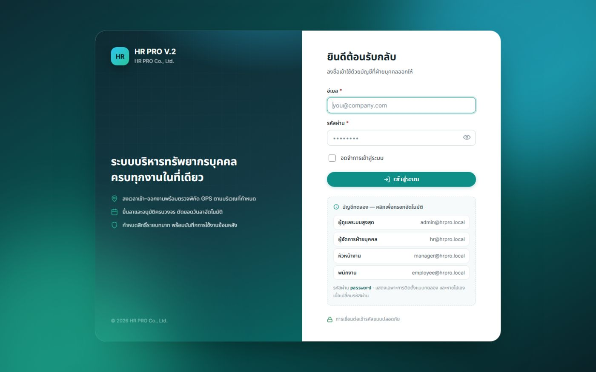

เส้นทาง A
ทดลองใช้บนเครื่องตัวเอง
ทำตามทีละขั้น ขั้นที่ 1–3 ทำครั้งเดียว ครั้งต่อไปเริ่มจากขั้นที่ 4 ได้เลย
ติดตั้ง PHP (ครั้งเดียว ~3 นาที)
HR PRO ทำงานด้วยโปรแกรม PHP 8.2 ขึ้นไป ถ้าเครื่องมีอยู่แล้วข้ามไปขั้นที่ 2 ได้เลย
Windows
macOS
Linux
เข้า herd.laravel.com แล้วกด Download for Windows (Laravel Herd รุ่นฟรีมี PHP พร้อมใช้งาน)
เปิดไฟล์ที่ดาวน์โหลด แล้วกด Next จนติดตั้งเสร็จ
เปิดหน้าต่าง Command Prompt ใหม่ (กด ⊞ Win พิมพ์ cmd แล้วกด Enter ) แล้วพิมพ์คำสั่งนี้เพื่อเช็ก
php -vถ้าขึ้น PHP 8.2, 8.3 หรือใหม่กว่า แปลว่าพร้อมแล้ว
ติดตั้ง Laravel Herd for macOS (ฟรี) หรือถ้ามี Homebrew อยู่แล้ว ใช้คำสั่งนี้แทนได้
brew install phpแล้วเช็กใน Terminal ด้วย php -v
Ubuntu 24.04 / Debian 12 ขึ้นไป:
sudo apt update && sudo apt install -y php-cli php-sqlite3 php-mbstring php-xml php-curlแล้วเช็กด้วย php -v ต้องได้ 8.2 ขึ้นไป
แตกไฟล์ ZIP
คลิกขวาที่ไฟล์ ZIP แล้วเลือก Extract All… / แตกไฟล์ทั้งหมด
เลือกที่เก็บที่จำง่าย เช่น C:\HR-PRO หรือโฟลเดอร์ Documents
! อย่าดับเบิลคลิกไฟล์จากในหน้าต่าง ZIP โดยตรง ต้องแตกไฟล์ออกมาก่อน ไม่อย่างนั้นระบบจะติดตั้งไม่ได้
ติดตั้งระบบ (~1 นาที)
Windows
macOS / Linux
ในโฟลเดอร์ที่แตกไว้ ดับเบิลคลิก install-windows.bat
i ถ้า Windows ขึ้นกรอบสีน้ำเงิน “Windows protected your PC” ให้กด More info แล้วกด Run anyway เพราะเป็นสคริปต์ที่ไม่ได้ลงลายเซ็นดิจิทัล ถ้าไม่สะดวกใจ เปิดไฟล์ด้วย Notepad เพื่อดูคำสั่งข้างในก่อนได้
เปิด Terminal ในโฟลเดอร์ที่แตกไว้ (macOS: คลิกขวาที่โฟลเดอร์ แล้วเลือก New Terminal at Folder ) แล้วพิมพ์
sh install-mac-linux.sh
หน้าต่างติดตั้งจะถามคำถามเดียว:
โหลดข้อมูลตัวอย่าง (พนักงาน 47 คน การลา เงินเดือน ฯลฯ) เพื่อทดลองดูระบบหรือไม่? [Y/n]
กด Enter (= ใช่) ถ้าต้องการลองดูระบบ แนะนำ จะได้ข้อมูลสมมุติครบทุกเมนู และบัญชีทดลอง 4 บทบาท
พิมพ์ n ถ้าต้องการเริ่มจากระบบว่าง มีแค่บัญชีผู้ดูแลระบบ เพื่อใส่ข้อมูลจริงเอง
เมื่อขึ้นข้อความ ติดตั้งเสร็จเรียบร้อย ก็ปิดหน้าต่างได้
เปิดระบบ
Windows
macOS / Linux
ดับเบิลคลิก start-windows.bat แล้วเบราว์เซอร์จะเปิดหน้าเข้าสู่ระบบขึ้นมาเองในไม่กี่วินาที
หรือเปิดเบราว์เซอร์แล้วไปที่ http://127.0.0.1:8000
! อย่าปิดหน้าต่างสีดำ ระหว่างใช้งาน เพราะหน้าต่างนั้นคือตัวระบบ ถ้าปิดหน้าต่าง ระบบจะหยุดทำงาน ใช้งานครั้งต่อไปแค่ทำขั้นที่ 4 นี้อีกครั้ง ข้อมูลทั้งหมดยังอยู่ครบ
เข้าสู่ระบบด้วยบัญชีทดลอง
ใต้ฟอร์มเข้าสู่ระบบจะมีกล่อง “บัญชีทดลอง” คลิกที่บัญชี ระบบจะกรอกอีเมลและรหัสผ่านให้ จากนั้นกด เข้าสู่ระบบ

กล่องบัญชีทดลองแสดงเฉพาะการติดตั้งแบบทดลองเท่านั้น และบัญชีที่เปลี่ยนรหัสผ่านแล้วจะหายออกจากกล่องเอง
* มีเฉพาะเมื่อเลือกโหลดข้อมูลตัวอย่างในขั้นที่ 3
i ลองเปลี่ยนรหัสผ่านได้ที่เมนูโปรไฟล์ (มุมขวาบน) ถ้าจะให้คนอื่นในวงแลนเข้ามาลองใช้ ควรเปลี่ยนรหัสผ่านทุกบัญชีก่อน
เส้นทาง B
ขึ้นใช้งานจริง (Production)
ระบบเดียวกัน แต่การเข้าสู่ระบบครั้งแรกจะทำงานอีกแบบโดยอัตโนมัติ เมื่อตั้ง APP_ENV=production
! อย่าใช้ install-windows.bat หรือ install.php กับเซิร์ฟเวอร์จริง เพราะสคริปต์เหล่านี้ตั้งค่าไว้สำหรับทดลองเท่านั้น และอย่าตั้ง SEED_DEMO=true กับระบบที่มีข้อมูลจริง เพราะจะเพิ่มพนักงานสมมุติและเปิดบัญชีทดลองที่ใช้รหัส password
เตรียมเซิร์ฟเวอร์
ใช้ PHP 8.2 ขึ้นไป กับ Nginx หรือ Apache และตั้ง document root ไปที่โฟลเดอร์ public/
ฐานข้อมูลเลือกได้ระหว่าง MySQL 8 หรือ MariaDB 10.6 ขึ้นไป (แนะนำ) หรือ SQLite สำหรับองค์กรเล็ก
เปิด HTTPS ให้เรียบร้อย
ตั้งค่าไฟล์ .env
cp .env.example .env
php artisan key:generateจากนั้นเปิดไฟล์ .env แล้วแก้ค่าต่อไปนี้
APP_ENV=production
APP_DEBUG=false
APP_URL=https://hr.บริษัทของคุณ.com
DB_CONNECTION=mysql
DB_DATABASE=hr_pro
DB_USERNAME=...
DB_PASSWORD=...
SEED_DEMO=false
ADMIN_EMAIL=อีเมลจริงของผู้ดูแลระบบ
ADMIN_PASSWORD= # เว้นว่างไว้ ระบบจะสุ่มรหัสให้ (แนะนำ)
SESSION_SECURE_COOKIE=true
HRPRO_COMPANY_NAME="ชื่อบริษัทของคุณ"
สร้างฐานข้อมูล แล้วจดรหัสผ่านครั้งแรก
composer install --no-dev --optimize-autoloader # ข้ามได้ถ้าใช้โฟลเดอร์ vendor จาก ZIP
php artisan migrate --seed --force
php artisan storage:link
php artisan config:cache && php artisan route:cache && php artisan view:cacheคำสั่ง migrate --seed จะแสดงกล่องแบบนี้ เพียงครั้งเดียว
HR PRO — บัญชีผู้ดูแลระบบสำหรับเข้าสู่ระบบครั้งแรก
อีเมล : it@yourcompany.com
รหัสผ่าน : q7RmX2vKp9LtW4sN
รหัสผ่านนี้สุ่มขึ้นใหม่และจะแสดงเพียงครั้งเดียว — คัดลอกเก็บไว้ตอนนี้
ระบบจะบังคับให้ตั้งรหัสผ่านใหม่ทันทีที่เข้าสู่ระบบครั้งแรกรหัสในตัวอย่างนี้เป็นเพียงตัวอย่าง ระบบจริงจะสุ่มรหัสใหม่ทุกครั้งที่ติดตั้ง
เข้าสู่ระบบครั้งแรก แล้วตั้งรหัสผ่านของตัวเอง
เข้าสู่ระบบด้วยอีเมลและรหัสผ่านจากขั้นที่ 3 แล้วระบบจะพาไปหน้า ตั้งรหัสผ่านใหม่ ทันที ซึ่งต้องตั้งรหัสที่ไม่ซ้ำกับรหัสชั่วคราวก่อนจึงจะเปิดเมนูอื่นได้ จากนั้นรหัสชั่วคราวจะใช้ไม่ได้อีก
ต่อจากนั้น ไปที่ ตั้งค่า เพื่อใส่ข้อมูลบริษัท สร้างแผนก ตำแหน่ง และบัญชีผู้ใช้ให้พนักงาน
ตั้งงานตามเวลา (cron)
ใช้สำหรับงานอัตโนมัติ เช่น ลบรูปถ่ายลงเวลาที่เกินระยะเก็บ ให้เพิ่มบรรทัดนี้ใน crontab ของเซิร์ฟเวอร์
* * * * * cd /path/to/hr-pro && php artisan schedule:run >> /dev/null 2>&1
ใช้ Docker / Render แทนการตั้งเซิร์ฟเวอร์เอง
ในแพ็กมี Dockerfile และ render.yaml อยู่แล้ว (ค่าเริ่มต้นเป็น production) ให้ตั้ง environment variable ADMIN_EMAIL บนหน้า dashboard ของผู้ให้บริการ และเว้น SEED_DEMO ไว้ เมื่อ deploy ครั้งแรก รหัสผ่านสุ่มจะแสดงใน deploy log / container log หรือจะตั้ง ADMIN_PASSWORD เป็นค่าลับเองก็ได้ ซึ่งก็ยังต้องเปลี่ยนรหัสเมื่อเข้าใช้ครั้งแรกเช่นกัน
docker build -t hr-pro .
docker run -p 8080:8080 -e ADMIN_EMAIL=it@yourcompany.com hr-proi ถ้าต้องการเปิดเว็บเดโมสาธารณะ (ให้คนทั่วไปลองเล่น) ให้ตั้ง SEED_DEMO=true ระบบจะกลับไปใช้บัญชีทดลองและแสดงกล่องบัญชีทดลอง แม้จะเป็น production ก็ตาม
ลืมรหัสผ่านผู้ดูแลระบบ หรือไม่ทันเห็นรหัสครั้งแรก
รันคำสั่งนี้บนเซิร์ฟเวอร์ ระบบจะออกรหัสชั่วคราวใหม่ (แสดงครั้งเดียว) และบังคับให้เปลี่ยนรหัสเมื่อเข้าสู่ระบบ
php artisan hrpro:admin-password # บัญชีตาม ADMIN_EMAIL
php artisan hrpro:admin-password someone@yourcompany.com # หรือระบุบัญชีอื่น
แก้ปัญหาที่พบบ่อย
ติดปัญหา ลองดูตรงนี้ก่อน
ขึ้นว่า “'php' is not recognized…” หรือ “ไม่พบโปรแกรม PHP”
ยังไม่ได้ติดตั้ง PHP หรือติดตั้งแล้วแต่ยังไม่ได้เปิดหน้าต่างใหม่ ให้ทำขั้นที่ 1 แล้วปิดหน้าต่างเก่าทั้งหมด ก่อนดับเบิลคลิกใหม่ ถ้ายังไม่หาย ให้ restart เครื่องหนึ่งครั้ง
ขึ้นว่า “PHP ยังไม่ได้เปิดส่วนขยาย: pdo_sqlite …”
หน้าต่างติดตั้งจะบอกตำแหน่งไฟล์ php.ini ให้เปิดไฟล์นั้นด้วย Notepad ค้นหาบรรทัด ;extension=pdo_sqlite (หรือชื่อส่วนขยายที่ขึ้นมา) แล้วลบเครื่องหมาย ; ด้านหน้าออก จากนั้นบันทึกและติดตั้งใหม่ ถ้าใช้ Laravel Herd ส่วนขยายที่จำเป็นจะเปิดไว้ให้ครบแล้ว
เบราว์เซอร์ขึ้น “This site can’t be reached / ไม่สามารถเข้าถึงไซต์นี้”
ตรวจว่าหน้าต่างสีดำของ start-windows.bat ยังเปิดอยู่ ถ้าเพิ่งเปิด ให้รอ 2–3 วินาทีแล้วกด F5
ขึ้นว่า port 8000 ถูกใช้งานอยู่
อาจเปิด start-windows.bat ซ้อนกันอยู่ 2 หน้าต่าง ให้ปิดหน้าต่างที่เกินไป หรือเปิดระบบที่ port อื่นด้วยคำสั่ง php artisan serve --port=8080 แล้วเข้า http://127.0.0.1:8080
กดลงเวลาไม่ได้ ระบบบอกว่าไม่ทราบตำแหน่ง
ให้อนุญาตตำแหน่งในเบราว์เซอร์ โดยคลิกไอคอนรูปแม่กุญแจหรือไอคอนตั้งค่าหน้าเว็บที่ช่อง URL แล้วเลือก Location → Allow ส่วนบนคอมพิวเตอร์ตั้งโต๊ะ ตำแหน่งอาจคลาดเคลื่อนได้ ผู้ดูแลระบบปรับความเข้มงวดได้ที่ ตั้งค่า → การลงเวลา
ลืมรหัสผ่านบนเครื่องทดลอง
เปิด Command Prompt ในโฟลเดอร์ HR PRO แล้วพิมพ์ php artisan hrpro:admin-password ระบบจะแสดงรหัสชั่วคราวใหม่ให้
อยากล้างข้อมูลทั้งหมดแล้วเริ่มใหม่
ดับเบิลคลิก install-windows.bat อีกครั้ง เมื่อระบบถามว่า “ต้องการล้างข้อมูลทั้งหมดแล้วติดตั้งใหม่หรือไม่?” ให้พิมพ์ y ข้อมูลเดิมจะหายทั้งหมด
ข้อมูลเก็บไว้ที่ไหน สำรองอย่างไร
บนเครื่องทดลอง ข้อมูลทั้งหมดอยู่ในไฟล์เดียวคือ database/database.sqlite ส่วนรูปและไฟล์แนบอยู่ใน storage/app คัดลอก 2 ที่นี้ไว้ก็สำรองข้อมูลได้ครบ